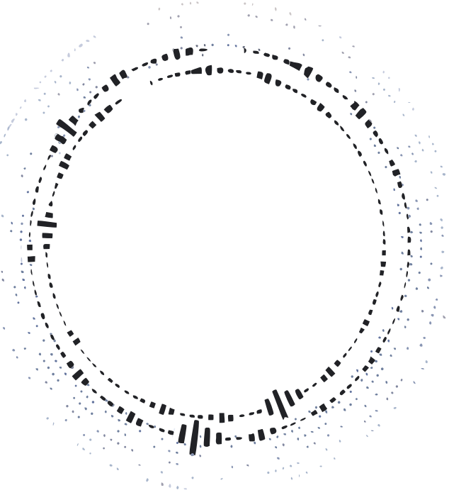

vol.00 — старт для новичков
в TouchDesigner.
Realtime-графика, VFX
и audioreactive-визуалы
на практике.
Курс даёт базу, с которой
можно спокойно разбираться
в чужих проектах и собирать
свои.


Программа
Курс состоит из 10 последовательных уроков, которые формируют базу для самостоятельной работы в TouchDesigner — от установки программы и знакомства с интерфейсом до сборки собственных realtime-визуалов.


FAQ
Для кого подойдёт курс?
Курс рассчитан на новичков, которые хотят начать работать в TouchDesigner и разобраться в логике realtime-визуалов с нуля. Предварительный опыт в TouchDesigner не требуется. Материал выстроен последовательно: от установки программы и знакомства с интерфейсом — к работе с изображением, 3D, анимацией, аудиореактивностью и сборке собственных сцен.
Подойдет ли Macbook для обучения?
Да. Поддерживаются MacBook Air и Pro 2020+ с macOS 13+. Рекомендуются Apple Silicon (M1–M5, включая Pro/Max). Некоторые функции доступны только на Windows, но для обучения и базовой практики Mac подходит.
Как скачать программу?
Нужна ли лицензия?
На первом уроке мы разберёмся с установкой необходимого софта для обучения на курсе и дальнейшей самостоятельной работы в индустрии. Платная лицензия не требуется.
Для вашего удобства весь необходимый софт будет подготовлен для скачивания.
Как можно оплатить курс?
Есть ли рассрочка?
Оплата проходит онлайн после регистрации и подтверждения почты. Доступ открывается автоматически после оплаты. Курс оплачивается одним платежом. Рассрочка и частичная оплата не предусмотрены.
Останется ли у меня доступ к материалам курса после его окончания?
Да. Доступ ко всем материалам курса остаётся навсегда.
Нужно ли иметь опыт в дизайне, 3D или программировании?
Нет. Для прохождения курса не нужны навыки программирования, опыт работы в 3D-пакетах или специальная подготовка в дизайне. Будет только плюсом, если вы уже знакомы со смежными направлениями. Важно быть готовым внимательно повторять материал, разбираться в логике нод и экспериментировать между уроками.
Какие знания я получу по итогу прохождения курса?
Курс даст базу, с которой можно перестать повторять чужие сетапы вслепую и начать собирать собственные визуальные сцены — от первых нод до цельной realtime-композиции. Внутри — только необходимая теория и практические сцены. Каждый следующий урок опирается на предыдущий:
вы не просто повторяете действия, а постепенно понимаете, как устроена нодовая логика, работа с изображением, звуком, данными и параметрами.
За время курса вы:
— установите и настроите TouchDesigner для работы;
— разберётесь в интерфейсе, параметрах и логике нодовых сетей;
— научитесь собирать изображения из TOP-нод, управлять ими и обрабатывать видео;
— освоите базовую работу с 3D: геометрией, материалами, камерами, светом и рендером;
— будете использовать CHOP-данные для анимации параметров и управления сценой;
— соберёте собственные генеративные и аудиореактивные сцены;
— поймёте, как организовать проект так, чтобы возвращаться к нему, дорабатывать и развивать дальше.
По итогу вы будете понимать, из каких процессов строится визуал в TouchDesigner, как связать их в единую систему и как самостоятельно развивать сцену под свою идею.
Как быстро я смогу начать делать визуалы в TouchDesigner?
Первые результаты вы сможете собирать уже после нескольких уроков. Курс построен так, что вы сразу работаете с практикой: повторяете сцены и постепенно начинаете понимать, как из отдельных нод собираются полноценные визуалы. К концу курса у вас будет базовый набор навыков, позволяющий самостоятельно собирать простые и средние realtime-сцены.
В каком виде будет проходить обучение? Будет ли обратная связь?
Обучение проходит на закрытой платформе курса: 10 видеоуроков с рабочими файлами и материалами к каждому уроку.
Обязательных домашних заданий нет — цель курса научить работе с инструментами TouchDesigner'а, чтобы вы могли самостоятельно собирать сцены.
Информирование по курсу будет проходить в закрытом Telegram-канале с поддержкой по техническим вопросам: установка, доступ, работа программы и содержание уроков.
Индивидуальная оценка работ не предусмотрена.
Когда будут доступны все уроки? Можно ли проходить курс в своём темпе?
Первый поток курса длится 8 недель. Уроки выходят по расписанию — 2 раза в неделю. После завершения потока курс переходит в формат полного доступа: все материалы доступны сразу после оплаты. Доступ остаётся навсегда, поэтому вы можете проходить курс в удобном темпе.
Когда я смогу начать обучение после оплаты?
Доступ к курсу открывается сразу после оплаты. Все материалы становятся доступны автоматически в личном кабинете.
Выдаётся ли сертификат после прохождения курса?
Нет. Сертификат по окончании курса не предусмотрен.
Можно ли проходить курс с телефона?
Нет. Прохождение курса, просмотр уроков и работа в личном кабинете доступны только с компьютера или ноутбука.
Какие системные требования у компьютера для работы в TouchDesigner?
TouchDesigner требует видеокарту с поддержкой Vulkan 1.1. — Windows 10 / 11
— 4 ГБ VRAM минимум (рекомендуется 8 ГБ+)
— NVIDIA 1000+ / AMD RDNA / Intel 500+
— актуальные драйверы
Часть функций доступна только на более мощных GPU и Windows-системах.